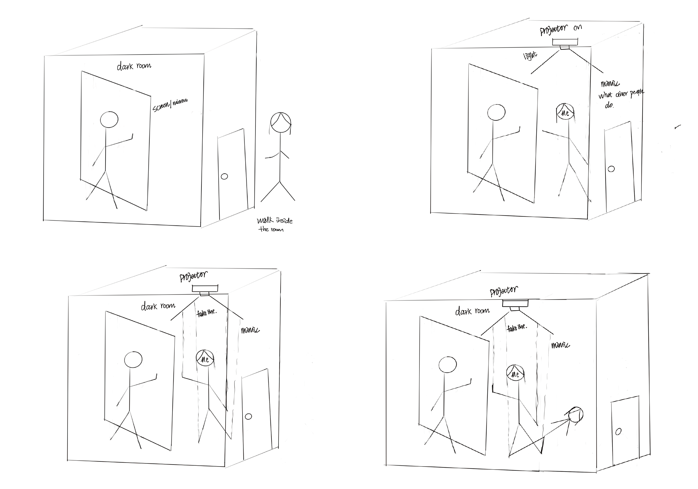

Thinking progress
starting point:

After classroom discussions and after-school conversations with classmates and teachers, I decided to use my first sketch as the direction and starting point for my final project. As I mentioned in my research story for my final project, I want to put individual/myself into the work to reflect on the concept instead of demonstrating the direct meaning behind the comformity itself. As my storyboard shows, at the beginning, I want to set a screen in a dark room to show other people's behavior, and when I enter the room, I will start to follow the screen people's behavior. And on the top there is a projector that can reflect my shadow with a different movement. For this concept，I consider myself as the marionette hanging by a virtual thread while I am trying to imitate others. The shadow with different movement reflects my real thoughts. However, there are some technical and logical problems with this idea. Firstly, It is hard for the projector to reflect the different behavior shadow without seeing your real shadow. Secondly, It is hard to create virtual lines with the projector to track your behaviors. Also, there is a logical problem that when the people enter the room, how do they know that the shadows reflected on the floor are their shadows? Due to these problems, I start to think deeper about how can I use shadow to create a more persuasive and experiential experience to show the conformity?
test 1:
I enter a dark room without lighting, and then suddenly, there is a light coming out reflect my shadow on the floor. I can tell this shadow is my own shadow because there are no other shadows in the room. A few seconds later, the lights go out. When the lights come back on, many shadows are coming out, and they all look like my shadow; they are all doing the same behavior. I stare at those shadows and start to confuse which one is my own shadow? Why are they all doing the same thing? Should I do something different to find my shadow? Which one is my real shadow?
For this idea, I can easily find my own shadow in the beginning because no other shadows can bother me; I know exactly who I am when I am alone. However, As more and more shadows appeared, I started to lose myself, and I began to question myself: Which one is my real shadow? I want to use these shadows and the space to show the inner thoughts under the conformity situation.